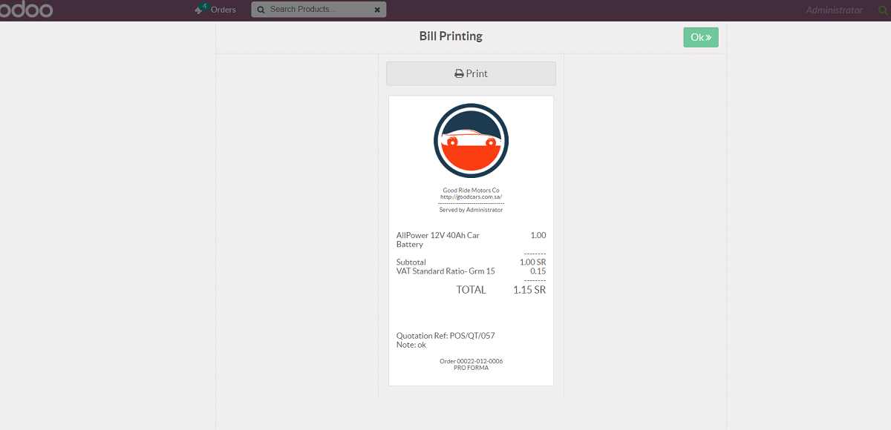

POS Quotation
This module helps us to create quotations in point of sale and from POS Quotation menu and you can easily load any draft state quotation into POS window.
Features
- You can easily book quotation and convert existing quotation to POS order and get the receipt.
- We can print the receipt by thermal printer or normal printer.
1. Allow Create quotation.
2. List Of quotation.
3. Create New Quotation from POS menu.
4. Print Quotation from backend in A4 size.
5 Quotation in PDF format in A4 size.
6. Pos Window.
1. Create Quotation Button to open Create Quotion Window
2. Cancel button to close window
3. Ok button to create quotation only
4. Save/Print button to create ant print quotation in small size paper
5 Quotation List button to load all draft state quotation
7. List of draft quotation in point of sale. When you press the confirm button the order will transferred to order line.
8. When we pay the quotation the quotation reference number will display on receipt.

If You Need Any Help Please Contact
Email Id: mdadnanusmani@gmail.com